Can AdversaryGraph Tell the Story of a Malware PCAP?
Twenty historical captures, genuine platform screenshots, source-bound short reports, and a separate comparison with the published answers.
Publication and evidence: Tested on 22 September 2026; first published on 1200km.com on 23 September 2026. Read the 20 concise reviewed explanations, download the public evidence bundle, or check publication boundaries and hashes. The supplied cover is an illustration, not a platform screenshot. The 20 case screenshots below retain their original bytes, including four failure states.
A packet capture is not an incident report. Extracting an IP address tells us that an address appeared in traffic; it does not tell us that it is an attacker. Recovering a Windows executable proves that bytes were transferred, not that the program ran. A useful report must connect those observations into a short account of what happened—and stop where the evidence stops.
This experiment tests that last step in AdversaryGraph. The original local run decoded 20 public training captures successfully, but produced long inventories rather than clear incident stories. The revised workflow adds a dedicated report-writing stage after packet analysis and approved IOC enrichment. It produces a short, cited analyst-review draft and a focused, readable report view.
The important distinction is between making a report readable and making its conclusions correct. This article evaluates both. Native reports are preserved even when they miss an attack stage or overstate what a limited evidence selection can establish. The publisher's answers appear in a separate comparison; they were not fed to the report-writing model.
Scope and safety: These are public Malware-Traffic-Analysis.net exercises from 2018–2020. Analysis ran through the local AdversaryGraph platform. No recovered malware was executed or uploaded, and no captured infrastructure was contacted. Reputation services received selected public indicators, while the writing model received bounded public-training metadata. Historical indicators are not a current production blocklist.
Table of contents
- What changed in the reporting flow
- Protocol and actual model
- Measured results
- The twenty cases
- What the answer comparison means
- Limitations and human comparison
- Conclusion
- Related research
- References
- Follow My Work
What changed in the reporting flow
The platform now separates three stages: packet evidence → approved IOC enrichment → summarise and write the investigation report. The last stage is an explicit action, not an automatic background disclosure to an AI provider.
The report starts with “What happened?” and caps its narrative at 130 words. The complete claim text is limited to 320 words, with at most three relevant identities, five qualified indicators, two technique candidates, two material uncertainties and one next check. Empty IOC and TTP lists are valid. They are preferable to populating an action list with every IP in the capture.
The evidence selection prioritises file transfers with known content types and bound client/server relationships. It distinguishes a PE file served under an image-looking URL from an ordinary image download. A qualified payload hash is a file-review lead; it does not automatically turn its hosting IP into a malicious indicator. A T1105 candidate must refer to an ingress file transfer, not merely an outbound POST.
Every retained claim has source-bound citations. The server checks literal IPs, hashes and ATT&CK identifiers against the passages cited by that claim. It may downgrade an evidence label or omit an invalid optional entry, recording the adjustment. A bad core narrative still fails validation; the workflow does not manufacture a substitute report. These checks constrain fabrication, but they cannot prove that a sentence correctly interprets a packet.
The focused report view keeps the story readable, with evidence and provider details available separately. Screenshots are taken from that actual view, not from a mock-up. Each screenshot is checked against the saved analysis ID, summary ID, capture SHA-256, actual model and rendered claim text, then opened for visual inspection. A readable screenshot of a flawed report remains evidence of a flawed report.
Two oversized investigation handoffs were also repaired. Instead of inserting hundreds of thousands of report characters into a bounded request, the UI passes a compact description and a reference to the authoritative stored analysis. The original full reports remain available.
Protocol and actual model
The corpus contains 20 newly acquired captures relative to the recorded local testing history. Selection continued through named exercises on the same training site; it was not random. A multi-capture exercise, Tinsolutions, was excluded during acquisition and replaced with Sputnik House. This was recorded before evaluating results. “New” does not mean absent from a language model's training data.
The deterministic baseline was frozen before this reporting revision. The same packet results and internal-context snapshots were retained. The first six cases became pre-answer engineering pilots; subsequent failures also informed reliability checks. This is an iterative system evaluation, not an untouched 20-case blind benchmark. All final native reports were frozen before publisher answers were retrieved. The evaluation protocol defines affected-system, incident-explanation, family-label and indicator comparisons separately.
The primary platform model was requested as gpt-4.1. The provider returned gpt-4.1-2025-04-14. Those are recorded API values, not assumptions based on a dropdown or an earlier conversation. After native OpenAI report-writing failures, the operator explicitly selected the configured Claude provider for fallback cases; their exact recorded models and counts appear below. Fallback successes do not erase OpenAI failures. No Qwen model ran in this revision, and this is not a Daybreak Blue platform-model benchmark. The code-editing assistant and the application's report-writing model are different roles.
The report prompt is pcap-investigation-summary-v5. The normal source selection is bounded at 18,000 characters. Larger selections can use a disclosed 10,000-character compact projection after zero-text provider length responses exposed a reliability problem. This did not by itself resolve Sol-Lightnet's empty responses, so their root cause remains unconfirmed. Omitted records are counted, the full packet evidence remains available, and each summary records its actual projection. A smaller model input must never be described as exhaustive review of the capture.
The local runtime reports 8.1.0-beta.1; exact images and uncommitted implementation changes are recorded in the accompanying verification report. The analyzer uses TShark 4.4.18, tshark-evidence-v6, and pcap-rules-v5. The experiment used a locally deployed research worktree. At the recorded test cutoff, those implementation changes were uncommitted; publishing this article does not claim that they are an immutable AdversaryGraph release.
Measured results
| Measure | Observed result |
|---|---|
| Captures decoded in the baseline | 20/20; 447,705 packets |
| Saved revised native summaries | 16/20 (80% completion, not 80% accuracy); four withheld |
| Actual returned models | claude-opus-4-8: 1, gpt-4.1-2025-04-14: 15 |
| Original full report median | 5,184 whitespace-delimited words across 20 cases |
| Revised short export median | 179 whitespace-delimited words across 16 saved reports |
| Claim-text length | 87–199 words; median 139.5; excludes headings/provenance |
| Final saved report generation | 500.973 seconds summed across 16 reports, including repair/pacing |
| Final saved summaries: reported tokens | 186,886 (171,199 input; 15,687 output), including 22 model calls |
| Superseded accepted pilots: tokens | 107,779 |
| Rejected endpoint attempts: reported tokens | 480,994 |
| Total recorded report-writing tokens | 775,659; one earlier accepted endpoint has unreported usage |
| Report-writing endpoint attempts | 45: 23 created, 22 validation-failed; only 16 final saved reports |
| Engineering audit window | 18:07:27–19:31:59 UTC on September 22: 84 min 33 s; not continuous inference time |
| Assistant tokens and monetary cost | Not available; no estimate presented |
| Screenshots | 20/20 final cards: automated checks plus individual visual inspection; 16 reports and four explicit failure states |
| Software validation | 1,624 backend tests passed, 180 skipped; four PCAP browser tests passed; frontend lint/build passed |
| Baseline preserved | 490 frozen files unchanged; 80 final native-output files frozen before answer retrieval |
Reputation outcomes: 1,114 retained per-case target records, not 1,114 completed external scans. VirusTotal: 1,112 deferred targets and two errors, no successful verdicts. ThreatFox: 11 ok results and 1,102 not_found; related IP:port hits are not exact bare-IP malicious verdicts. MalwareBazaar: one direct Gozi hash match, 96 not_found, 123 not applicable. One OTX lookup was retained as context only. Cache reuse and provider applicability mean these counts are not external HTTP-call counts.
The internal library checked 15,750 per-case observable records with zero exact matches. Of 526 cross-case overlaps, 506 were private-address or multicast coincidences; none establishes actor attribution. The original run also retained 18 full report/PDF exports and verified the size plus MD5/SHA-1/SHA-256 of 39 selected downloads—not all 2,032 artifact records.
Four cases remain withheld: Badbundt, StingrayAhoy, Turkey and Defence, and Happy Halloween. Final citation-binding reliability fixes passed local tests and were deployed, but their proposed live Claude re-tests were blocked by the approval mechanism pending explicit consent for the exact public-PCAP metadata transfer. Broad earlier API approval did not clear that check; no further cloud call was made.
Reputation coverage needs particular care. VirusTotal returned rate-limit errors; deferred targets were not completed scans and were not treated as clean. ThreatFox states that older IOCs expire from its API datasets, which limits the usefulness of a present-day lookup for these historical captures. A not-found result has several possible causes and does not prove benignness. VirusTotal error reference, ThreatFox API documentation.
The internal IOC library was consulted through exact matching, but produced zero exact matches in this corpus. That is a measured lack of local corroboration, not a claim that the library was bypassed or that the traffic was benign. Cross-case shared private addresses and multicast traffic were kept separate from threat correlation; overlap alone did not establish a campaign or actor.
The twenty cases
For the 16 saved summaries, each code block below is the native platform narrative, not an answer-assisted rewrite. The four failed cases instead have an explicitly labelled status message, not an invented model narrative. The linked short report and structured JSON retain the saved claims and citations. The comparison below each screenshot is evaluation commentary added only after the native-output freeze. It is not part of the model's original result.
1. Steelcoffee — 2020-04-24
Native result: partial. gpt-4.1-2025-04-14 · 199 claim-text words · 6.90 s generation · 12,072 tokens including internal repairs.
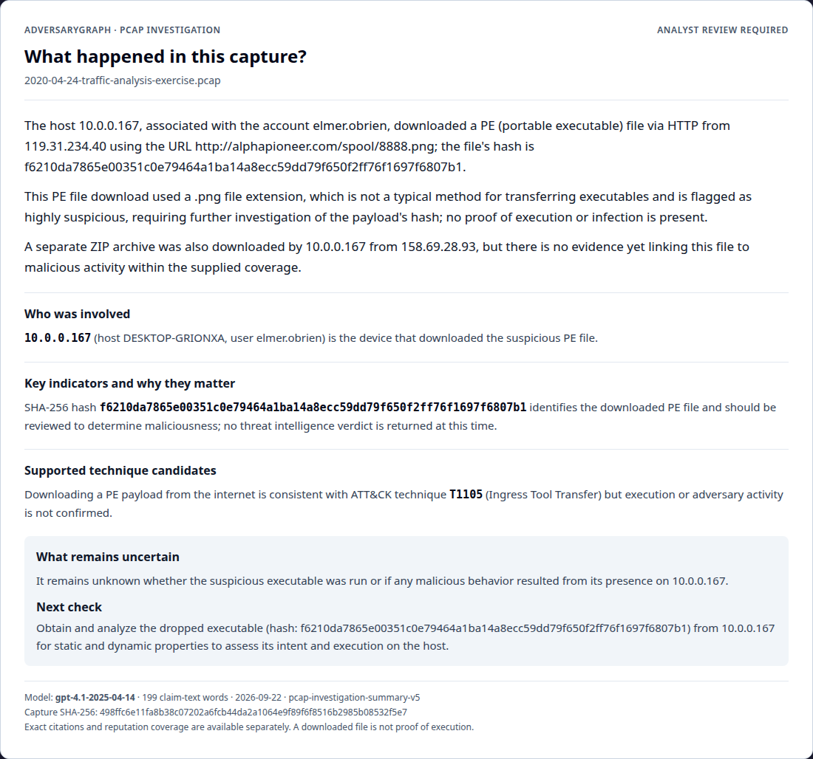
Native platform narrative (unchanged):
The host 10.0.0.167, associated with the account elmer.obrien, downloaded a PE (portable executable) file via HTTP from 119.31.234.40 using the URL http://alphapioneer.com/spool/8888.png; the file's hash is f6210da7865e00351c0e79464a1ba14a8ecc59dd79f650f2ff76f1697f6807b1.
This PE file download used a .png file extension, which is not a typical method for transferring executables and is flagged as highly suspicious, requiring further investigation of the payload's hash; no proof of execution or infection is present.
A separate ZIP archive was also downloaded by 10.0.0.167 from 158.69.28.93, but there is no evidence yet linking this file to malicious activity within the supplied coverage.
What happened — reference-assisted review: Elmer Obrien’s workstation (10.0.0.167, DESKTOP-GRIONXA) received a Windows executable disguised as a PNG from alphapioneer[.]com. Its recovered SHA-256 matches the publisher’s Qakbot sample. The packet transfer and identity are established; the family identification comes from the published investigation, not a successful live reputation lookup in this run. Official answer.
Comparison: Correct affected workstation, user, download server, disguised payload and exact SHA-256. The native report does not identify Qakbot or reconstruct its later activity. It spends space on another ZIP transfer whose relevance is unresolved.
Evidence boundary: The reference explicitly does not enumerate all Qakbot indicators. An unlisted transfer is not automatically benign or a false positive.
Extraction check: 1/1 selected reference SHA-256 values occur in the original artifact records; 1/1 appear anywhere in the short report. This is exact-byte agreement, not proof of execution.
Short-list IOC review: f6210da7865e00351c0e79464a1ba14a8ecc59dd79f650f2ff76f1697f6807b1 — corroborated exact payload.
Native short report · Structured claims and citations · Comparison · Screenshot validation · Packet and enrichment snapshot
2. Mondogreek — 2020-03-14
Native result: partial. gpt-4.1-2025-04-14 · 136 claim-text words · 71.55 s generation · 21,433 tokens including internal repairs.
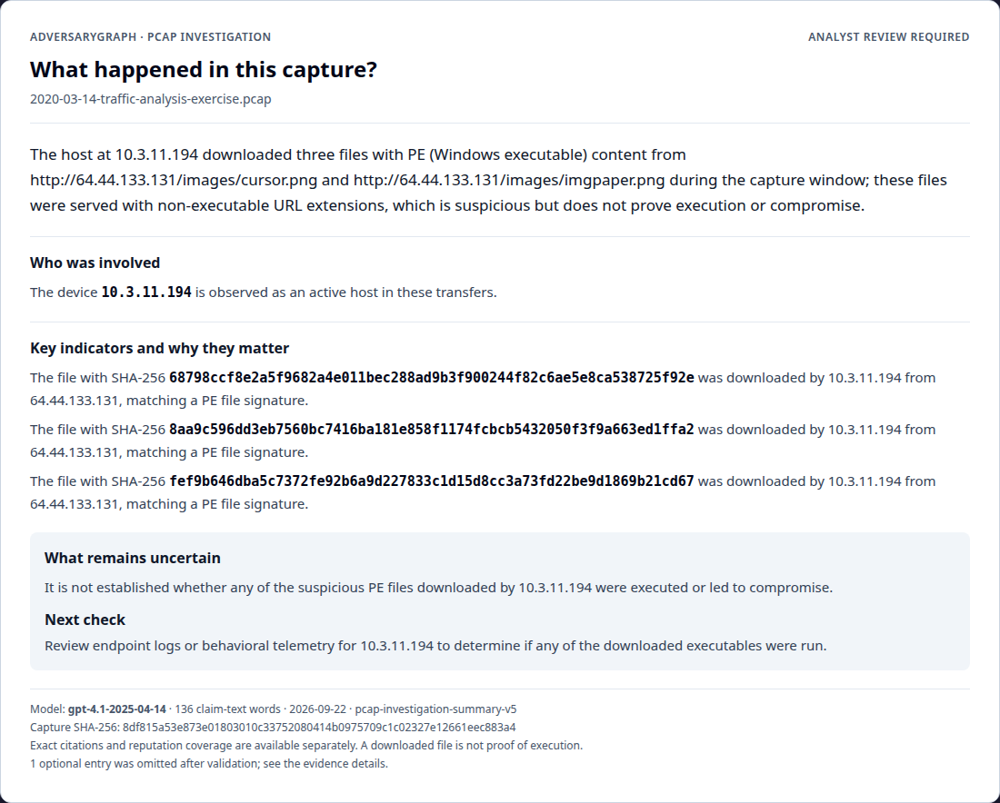
Native platform narrative (unchanged):
The host at 10.3.11.194 downloaded three files with PE (Windows executable) content from http://64.44.133.131/images/cursor.png and http://64.44.133.131/images/imgpaper.png during the capture window; these files were served with non-executable URL extensions, which is suspicious but does not prove execution or compromise.
What happened — reference-assisted review: On March 11, Otis Witherspoon’s laptop (10.3.11.194, LAPTOP-7XMV2SN) received Trickbot and made follow-on encrypted and HTTP communications. The published chain starts with YAS20.exe from bolton-tech[.]com; later executable modules were served as cursor.png and imgpaper.png from 64.44.133[.]131. The native summary covers those later downloads, not the complete chain. Official answer.
Comparison: Correct victim IP and follow-up download server; two selected payload hashes match the answer exactly. Initial payload, user/hostname, Trickbot identification and post-infection destinations are absent from the short report.
Evidence boundary: The exercise page is dated March 14, but the incident is March 11. A third native hash is not addressed by the non-exhaustive answer.
Extraction check: 3/3 selected reference SHA-256 values occur in the original artifact records; 2/3 appear anywhere in the short report. This is exact-byte agreement, not proof of execution.
Short-list IOC review: 68798ccf8e2a5f9682a4e011bec288ad9b3f900244f82c6ae5e8ca538725f92e — corroborated exact payload; 8aa9c596dd3eb7560bc7416ba181e858f1174fcbcb5432050f3f9a663ed1ffa2 — corroborated exact payload; fef9b646dba5c7372fe92b6a9d227833c1d15d8cc3a73fd22be9d1869b21cd67 — not explicitly addressed by reference text.
Native short report · Structured claims and citations · Comparison · Screenshot validation · Packet and enrichment snapshot
3. One-Hot-Mess — 2020-02-21
Native result: partial. gpt-4.1-2025-04-14 · 158 claim-text words · 4.55 s generation · 6,093 tokens including internal repairs.
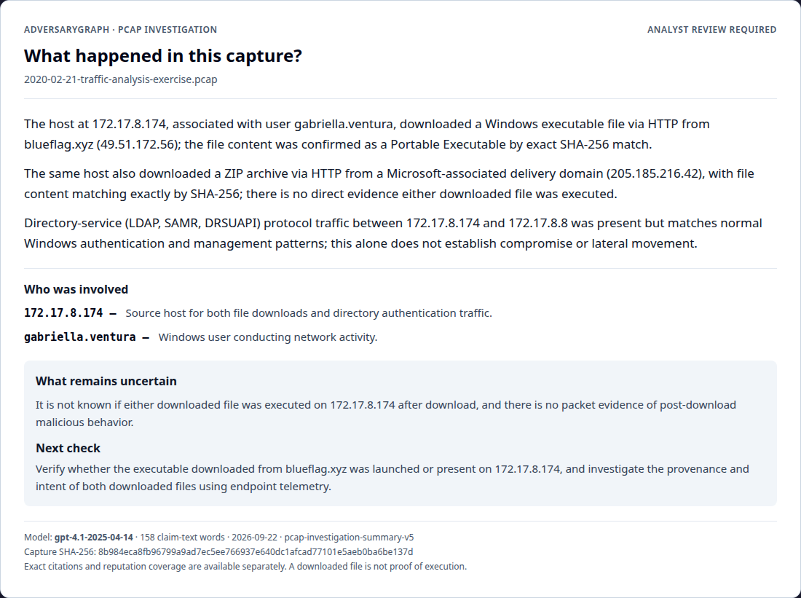
Native platform narrative (unchanged):
The host at 172.17.8.174, associated with user gabriella.ventura, downloaded a Windows executable file via HTTP from blueflag.xyz (49.51.172.56); the file content was confirmed as a Portable Executable by exact SHA-256 match.
The same host also downloaded a ZIP archive via HTTP from a Microsoft-associated delivery domain (205.185.216.42), with file content matching exactly by SHA-256; there is no direct evidence either downloaded file was executed.
Directory-service (LDAP, SAMR, DRSUAPI) protocol traffic between 172.17.8.174 and 172.17.8.8 was present but matches normal Windows authentication and management patterns; this alone does not establish compromise or lateral movement.
What happened — reference-assisted review: Gabriella Ventura’s workstation (172.17.8.174, DESKTOP-TZMKHKC) downloaded the Dridex payload from blueflag[.]xyz and subsequently communicated over TLS with 91.211.88[.]122. The native report finds the initial transfer but misses that follow-on context. The publisher’s persistence details came from additional host artifacts, which were not supplied to this PCAP-only run. Official answer.
Comparison: Correct victim, account, download domain/server and transfer. Misses Dridex and the later suspicious TLS activity. The claim that no post-download malicious behavior is supported is broader than the selected evidence justifies.
Evidence boundary: Do not count absent scheduled tasks, registry persistence or host-resident loader files as PCAP extraction failures.
Extraction check: 1/1 selected reference SHA-256 values occur in the original artifact records; 0/1 appear anywhere in the short report. This is exact-byte agreement, not proof of execution.
Short-list IOC review: No saved action-list indicators. This is not perfect precision and not a clean verdict.
Native short report · Structured claims and citations · Comparison · Screenshot validation · Packet and enrichment snapshot
4. Sol-Lightnet — 2020-01-30
Native result: partial. claude-opus-4-8 · 150 claim-text words · 80.92 s generation · 30,684 tokens including internal repairs.
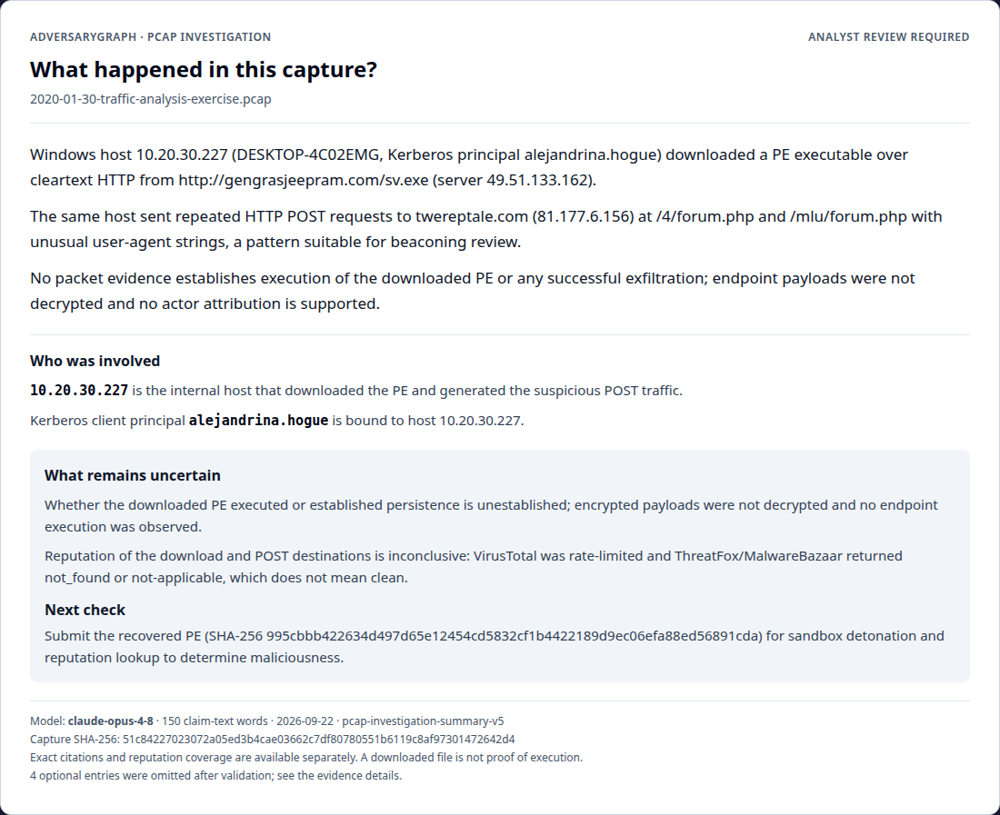
Native platform narrative (unchanged):
Windows host 10.20.30.227 (DESKTOP-4C02EMG, Kerberos principal alejandrina.hogue) downloaded a PE executable over cleartext HTTP from http://gengrasjeepram.com/sv.exe (server 49.51.133.162).
The same host sent repeated HTTP POST requests to twereptale.com (81.177.6.156) at /4/forum.php and /mlu/forum.php with unusual user-agent strings, a pattern suitable for beaconing review.
No packet evidence establishes execution of the downloaded PE or any successful exfiltration; endpoint payloads were not decrypted and no actor attribution is supported.
What happened — reference-assisted review: Alejandrina Hogue’s workstation (10.20.30.227, DESKTOP-4C02EMG) received sv.exe from gengrasjeepram[.]com, then posted to twereptale[.]com. The publisher identifies Hancitor and additional encrypted payload transfers from xolightfinance[.]com. The Claude summary correctly connects the first download and POST activity, while leaving execution and attribution unconfirmed. Official answer.
Comparison: Correct workstation/user, executable download, hash and follow-on POST destinations. Hancitor identification and the later encrypted payload stage are absent.
Evidence boundary: api.ipify.org is an IP-discovery service, not inherently malicious. This case used a recorded Claude fallback, not OpenAI.
Extraction check: 1/1 selected reference SHA-256 values occur in the original artifact records; 1/1 appear anywhere in the short report. This is exact-byte agreement, not proof of execution.
Short-list IOC review: No saved action-list indicators. This is not perfect precision and not a clean verdict.
Native short report · Structured claims and citations · Comparison · Screenshot validation · Packet and enrichment snapshot
5. It happened on Christmas day — 2019-12-25
Native result: missed. gpt-4.1-2025-04-14 · 124 claim-text words · 6.16 s generation · 5,122 tokens including internal repairs.
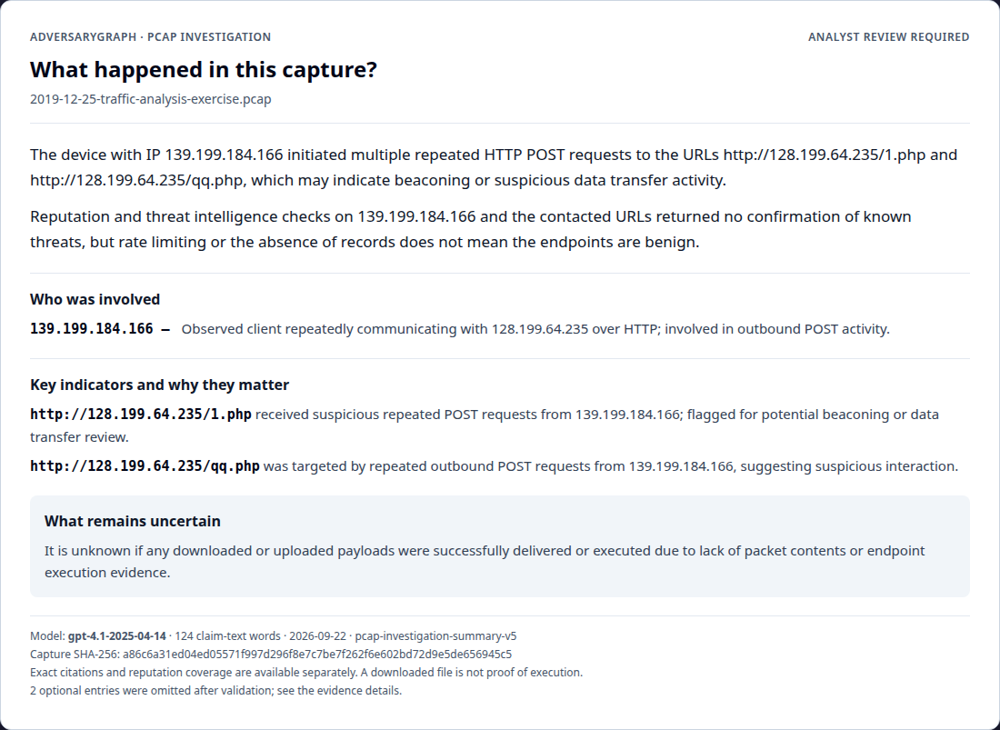
Native platform narrative (unchanged):
The device with IP 139.199.184.166 initiated multiple repeated HTTP POST requests to the URLs http://128.199.64.235/1.php and http://128.199.64.235/qq.php, which may indicate beaconing or suspicious data transfer activity.
Reputation and threat intelligence checks on 139.199.184.166 and the contacted URLs returned no confirmation of known threats, but rate limiting or the absence of records does not mean the endpoints are benign.
What happened — reference-assisted review: This capture shows web-server reconnaissance, not an established malware callback. The scanner 139.199.184[.]166 probed the server exposed as 128.199.64[.]235, with internal address 10.12.25.101, including activity against ports 80, 8080 and 8983. The native summary reverses the investigative emphasis by describing possible beaconing or data transfer. Official answer.
Comparison: Contains the external scanner and server addresses, but does not explain their correct security roles. Wrong core scenario; omits the internal victim. Targeted server URLs are presented as beaconing-review indicators. It also suggests contacted URLs received reputation checks, although full-URL enrichment was not performed.
Evidence boundary: The PDF’s notes contain 139.119.184.166, while its main answer and capture use 139.199.184.166; this is treated as a reference inconsistency.
Short-list IOC review: hxxp://128.199.64.235/1.php — incorrect security role target not c2; hxxp://128.199.64.235/qq.php — incorrect security role target not c2.
Native short report · Structured claims and citations · Comparison · Screenshot validation · Packet and enrichment snapshot
6. Icemaiden — 2019-12-03
Native result: missed. gpt-4.1-2025-04-14 · 131 claim-text words · 4.30 s generation · 4,669 tokens including internal repairs.
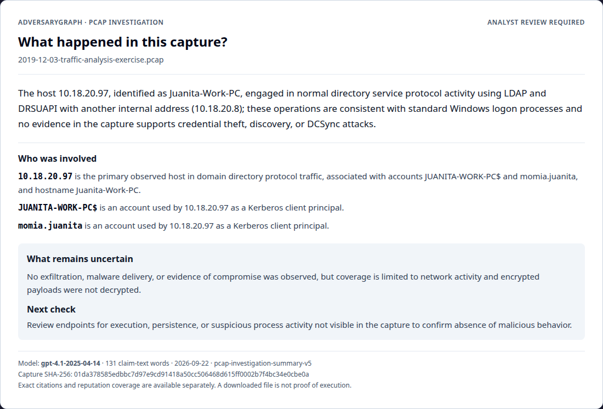
Native platform narrative (unchanged):
The host 10.18.20.97, identified as Juanita-Work-PC, engaged in normal directory service protocol activity using LDAP and DRSUAPI with another internal address (10.18.20.8); these operations are consistent with standard Windows logon processes and no evidence in the capture supports credential theft, discovery, or DCSync attacks.
What happened — reference-assisted review: The publisher identifies Ursnif activity on JUANITA-WORK-PC (10.18.20.97), used by momia.juanita. Webmail activity precedes the infection, but email delivery is a hypothesis rather than proof. AdversaryGraph finds the correct identity yet summarises routine directory traffic, failing to explain the suspicious part of the capture. Official answer.
Comparison: Correct workstation, IP and account. Misses the incident and family; overgeneralises normal directory activity into a lack-of-compromise finding.
Evidence boundary: Banking and webmail domains are context, not malicious IOCs. The family in the answer is supported by associated IDS alerts that were not model input.
Short-list IOC review: No saved action-list indicators. This is not perfect precision and not a clean verdict.
Native short report · Structured claims and citations · Comparison · Screenshot validation · Packet and enrichment snapshot
7. Okay-Boomer — 2019-11-12
Native result: partial. gpt-4.1-2025-04-14 · 143 claim-text words · 6.57 s generation · 10,662 tokens including internal repairs.
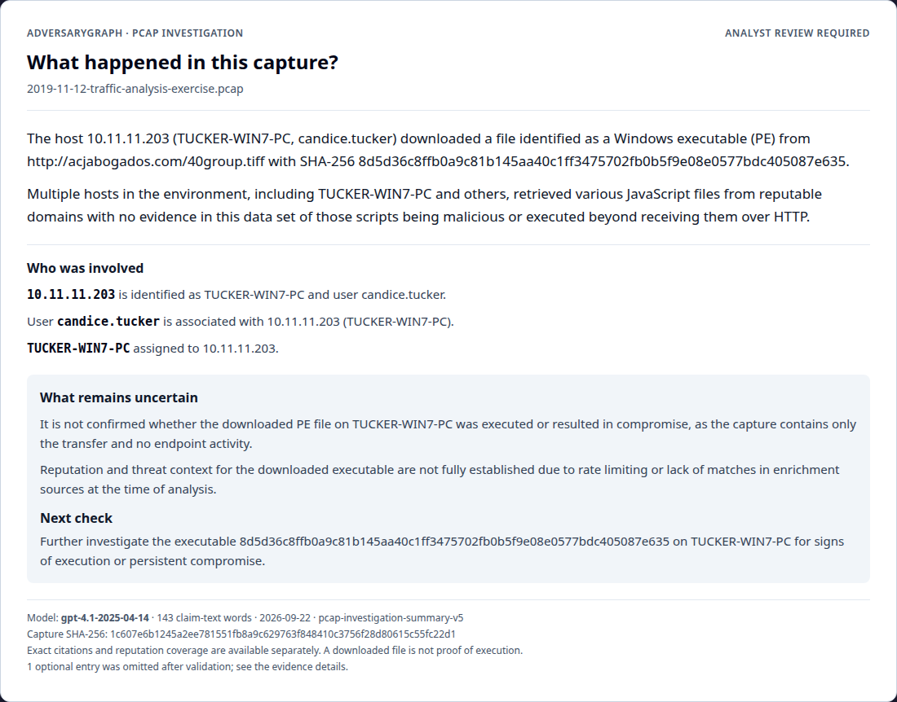
Native platform narrative (unchanged):
The host 10.11.11.203 (TUCKER-WIN7-PC, candice.tucker) downloaded a file identified as a Windows executable (PE) from http://acjabogados.com/40group.tiff with SHA-256 8d5d36c8ffb0a9c81b145aa40c1ff3475702fb0b5f9e08e0577bdc405087e635.
Multiple hosts in the environment, including TUCKER-WIN7-PC and others, retrieved various JavaScript files from reputable domains with no evidence in this data set of those scripts being malicious or executed beyond receiving them over HTTP.
What happened — reference-assisted review: Candice Tucker’s Windows host (10.11.11.203, TUCKER-WIN7-PC) downloaded a Windows executable from acjabogados[.]com/40group.tiff. The recovered hash matches the publisher’s sample. Subsequent TCP attempts targeted 5.188.108[.]58 and 138.201.6[.]195 without a response. These are attempted connections, not proof of a successful command-and-control session. Official answer.
Comparison: Correct victim, identity, disguised payload URL and SHA-256. Omits the subsequent connection attempts. The exact payload is not included in the short IOC list; the new extension-mismatch rule does not yet cover .tiff.
Evidence boundary: The answer does not establish a specific malware family. Its historical VirusTotal ratio is not a current result from this run.
Extraction check: 1/1 selected reference SHA-256 values occur in the original artifact records; 1/1 appear anywhere in the short report. This is exact-byte agreement, not proof of execution.
Short-list IOC review: No saved action-list indicators. This is not perfect precision and not a clean verdict.
Native short report · Structured claims and citations · Comparison · Screenshot validation · Packet and enrichment snapshot
8. Badbundt — 2019-08-20
Native result: withheld. No saved native model result. Earlier validation failures remain in the audit; the final retry was blocked pending exact-transfer consent.
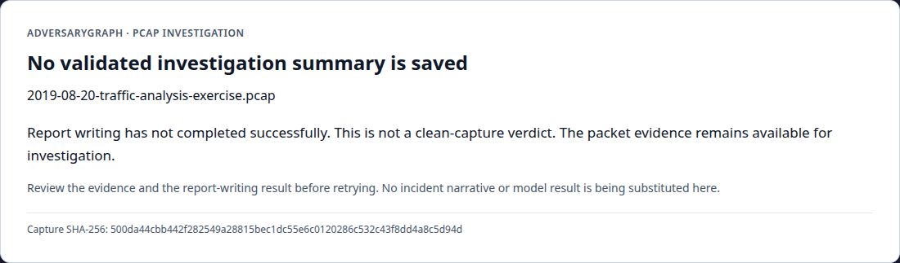
Native platform narrative (unchanged):
No validated native investigation summary is saved.
Report writing failed; this is not a clean-capture verdict.
What happened — reference-assisted review: The published investigation identifies Ursnif followed by Trickbot on Reginald Chandler’s TAMPA-OFFICE-PC (10.8.20.101). Initial delivery, encrypted follow-up transfers and later executable modules form a multi-stage infection. Some .rar-looking responses contain encrypted data, not recoverable plaintext executables. The platform has packet evidence, but no validated native short summary was saved. Official answer.
Comparison: Not scored as a native summary success: report writing was withheld. No saved incident story, family explanation or short IOC action list.
Evidence boundary: A final provider retry was blocked pending explicit consent for the exact metadata transfer. The reference-based paragraph here is not a substituted platform result.
Short-list IOC review: No saved action-list indicators. This is not perfect precision and not a clean verdict.
Native short report · Structured claims and citations · Comparison · Screenshot validation · Packet and enrichment snapshot
9. So hot right now — 2019-07-19
Native result: partial. gpt-4.1-2025-04-14 · 164 claim-text words · 70.35 s generation · 20,353 tokens including internal repairs.
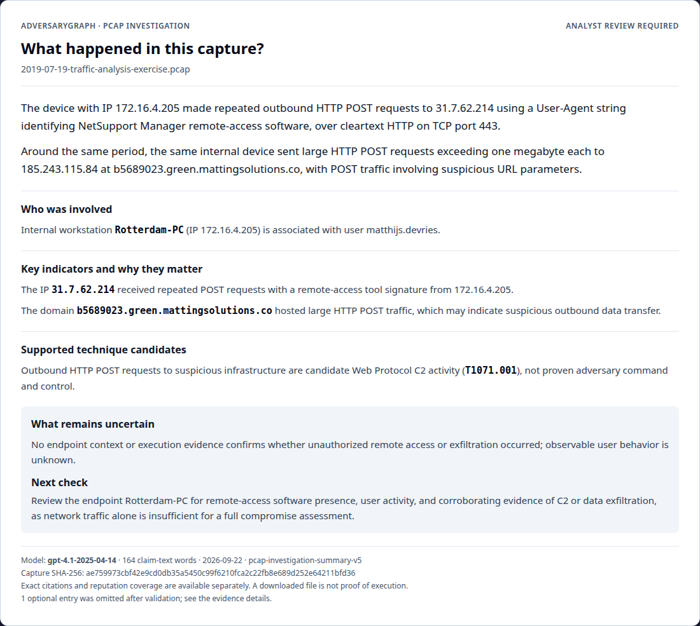
Native platform narrative (unchanged):
The device with IP 172.16.4.205 made repeated outbound HTTP POST requests to 31.7.62.214 using a User-Agent string identifying NetSupport Manager remote-access software, over cleartext HTTP on TCP port 443.
Around the same period, the same internal device sent large HTTP POST requests exceeding one megabyte each to 185.243.115.84 at b5689023.green.mattingsolutions.co, with POST traffic involving suspicious URL parameters.
What happened — reference-assisted review: The publisher describes a fake-browser-update infection on ROTTERDAM-PC (172.16.4.205), used by matthijs.devries, followed by NetSupport remote-access traffic and uploaded desktop screenshots. The native summary recognises NetSupport and large POST transfers but does not recover the full fake-update-to-screenshot-theft story. The packet destination is 31.7.62[.]214, despite the answer listing .213. Official answer.
Comparison: Correct host/user, NetSupport-associated traffic and large outbound transfers. Misses SocGholish delivery and identification of the uploaded content as screenshots. The phrase “exceeding one megabyte each” overgeneralises the cited single aggregated finding.
Evidence boundary: 31.7.62.214 is directly verified in packets; the PDF lists 31.7.62.213. Commercial remote-access software and cleartext HTTP on port 443 require context, not an automatic malware verdict.
Short-list IOC review: 31.7.62.214 — packet verified reference ip discrepancy; b5689023.green.mattingsolutions.co — not explicitly addressed by reference text.
Native short report · Structured claims and citations · Comparison · Screenshot validation · Packet and enrichment snapshot
10. Phenomenoc — 2019-06-22
Native result: partial. gpt-4.1-2025-04-14 · 99 claim-text words · 5.16 s generation · 7,926 tokens including internal repairs.
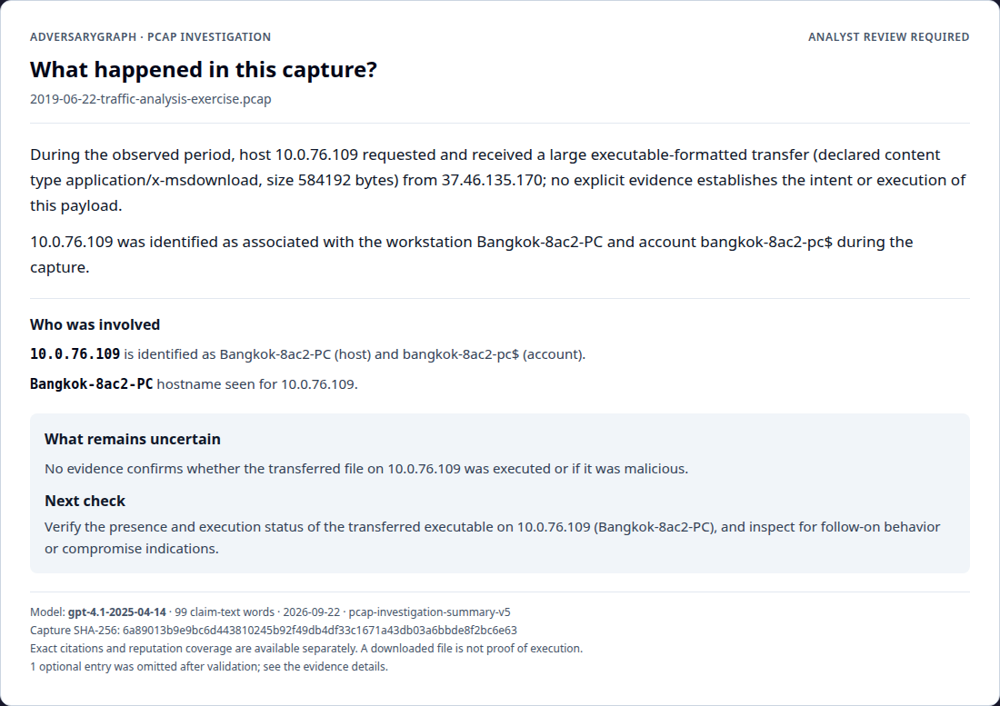
Native platform narrative (unchanged):
During the observed period, host 10.0.76.109 requested and received a large executable-formatted transfer (declared content type application/x-msdownload, size 584192 bytes) from 37.46.135.170; no explicit evidence establishes the intent or execution of this payload.
10.0.76.109 was identified as associated with the workstation Bangkok-8ac2-PC and account bangkok-8ac2-pc$ during the capture.
What happened — reference-assisted review: The reference identifies Rig exploit-kit delivery of KPOT Stealer to BANGKOK-8AC2-PC (10.0.76.109), used by edris.haight. Delivery involves 37.46.135[.]170; follow-on traffic uses 8.209.83[.]76 and fghjkmgru34[.]site. The native report notices the executable-declared transfer but misses the delivery mechanism, stealer and later communications. Official answer.
Comparison: Correct affected host and delivery server. No human user, exploit-kit interpretation, KPOT label or post-infection destination in the short report. A computer account is shown instead of the person’s account.
Evidence boundary: The answer’s hash is for malware retrieved from the infected host. It is not assumed to equal the encoded exploit-kit network object; family identification also uses external alerts.
Short-list IOC review: No saved action-list indicators. This is not perfect precision and not a clean verdict.
Native short report · Structured claims and citations · Comparison · Screenshot validation · Packet and enrichment snapshot
11. BeguileSoft — 2019-05-02
Native result: missed. gpt-4.1-2025-04-14 · 159 claim-text words · 69.80 s generation · 11,277 tokens including internal repairs.
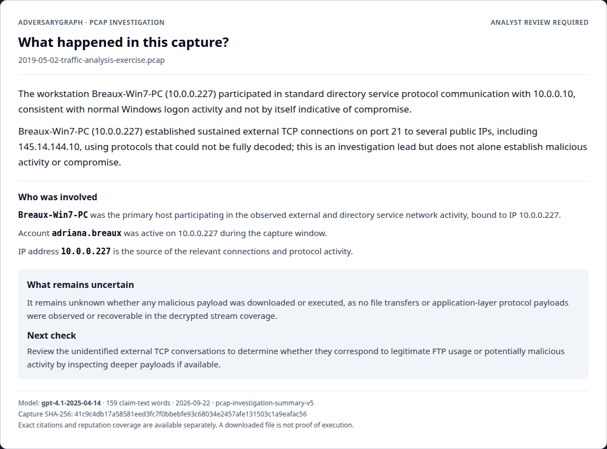
Native platform narrative (unchanged):
The workstation Breaux-Win7-PC (10.0.0.227) participated in standard directory service protocol communication with 10.0.0.10, consistent with normal Windows logon activity and not by itself indicative of compromise.
Breaux-Win7-PC (10.0.0.227) established sustained external TCP connections on port 21 to several public IPs, including 145.14.144.10, using protocols that could not be fully decoded; this is an investigation lead but does not alone establish malicious activity or compromise.
What happened — reference-assisted review: The published case identifies Hawkeye stealing information from Adriana Breaux’s workstation (10.0.0.227, BREAUX-WIN7-PC). FTP uploads carry credential data, keystrokes and screenshots to files.000webhost[.]com. The native report identifies the host and port-21 sessions but fails to interpret the FTP transfer behavior that explains the incident. Official answer.
Comparison: Correct workstation/account and external port-21 connections. Misses FTP-based theft and Hawkeye. “Decrypted stream coverage” is misleading: this workflow did not decrypt TLS payloads.
Evidence boundary: The PDF lists 154.14.* hosting IPs; packets show 145.14.144.10, 145.14.145.4 and 145.14.145.99. Hosting and IP-check services are not inherently malicious.
Short-list IOC review: No saved action-list indicators. This is not perfect precision and not a clean verdict.
Native short report · Structured claims and citations · Comparison · Screenshot validation · Packet and enrichment snapshot
12. StingrayAhoy — 2019-04-15
Native result: withheld. No saved native model result. Earlier validation failures remain in the audit; the final retry was blocked pending exact-transfer consent.
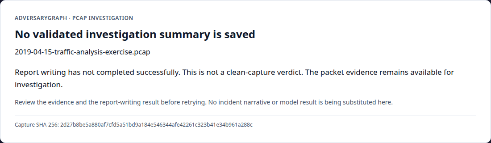
Native platform narrative (unchanged):
No validated native investigation summary is saved.
Report writing failed; this is not a clean-capture verdict.
What happened — reference-assisted review: The reference describes Ursnif followed by AZORult on Kim Jooyoung’s SEOUL-4A67-PC (10.0.90.175). The recoverable Ursnif executable has SHA-256 50007a82…09e3a2. That exact hash also received the run’s only direct malicious-file reputation match, labelled Gozi by MalwareBazaar. Nevertheless, no validated native short report was saved. Official answer.
Comparison: No native-summary success. Separately, the extracted hash and direct MalwareBazaar record corroborate the first payload. No saved short incident story despite useful packet and reputation evidence.
Evidence boundary: The reputation record was queried in 2026 and first seen there in 2022; neither date is the date of this 2019 incident. Final retry awaits exact-transfer consent.
Extraction check: 1/1 selected reference SHA-256 values occur in the original artifact records; 0/1 appear anywhere in the short report. This is exact-byte agreement, not proof of execution.
Short-list IOC review: No saved action-list indicators. This is not perfect precision and not a clean verdict.
Native short report · Structured claims and citations · Comparison · Screenshot validation · Packet and enrichment snapshot
13. LittleTigers — 2019-03-19
Native result: partial. gpt-4.1-2025-04-14 · 143 claim-text words · 4.94 s generation · 6,239 tokens including internal repairs.
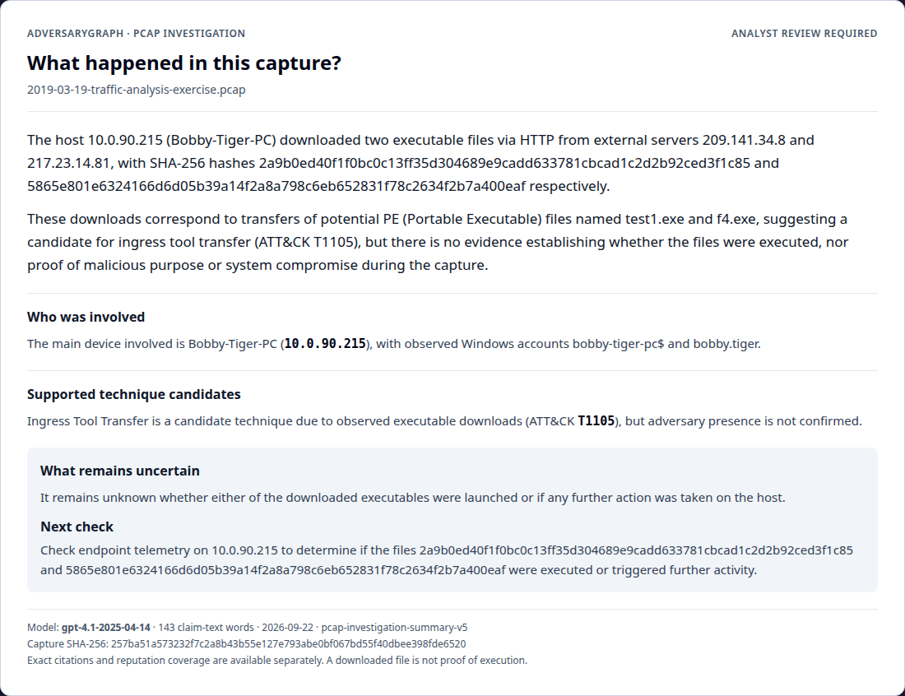
Native platform narrative (unchanged):
The host 10.0.90.215 (Bobby-Tiger-PC) downloaded two executable files via HTTP from external servers 209.141.34.8 and 217.23.14.81, with SHA-256 hashes 2a9b0ed40f1f0bc0c13ff35d304689e9cadd633781cbcad1c2d2b92ced3f1c85 and 5865e801e6324166d6d05b39a14f2a8a798c6eb652831f78c2634f2b7a400eaf respectively.
These downloads correspond to transfers of potential PE (Portable Executable) files named test1.exe and f4.exe, suggesting a candidate for ingress tool transfer (ATT&CK T1105), but there is no evidence establishing whether the files were executed, nor proof of malicious purpose or system compromise during the capture.
What happened — reference-assisted review: Bobby Tiger’s workstation (10.0.90.215, BOBBY-TIGER-PC) downloaded test1.exe and f4.exe. The recovered hashes exactly match the publisher’s Remcos and Dridex payloads. The reference also describes distinct follow-on communications. The native summary accurately records the two transfers but stops before explaining the two-malware incident. Official answer.
Comparison: Correct affected host/account, both payload servers and both exact SHA-256 hashes. Remcos/Dridex identification and their later communications are omitted; neither recovered file appears in the short IOC list.
Evidence boundary: TLS on port 3389 in this exercise is not automatically RDP. Downloading the files alone does not establish endpoint execution.
Extraction check: 2/2 selected reference SHA-256 values occur in the original artifact records; 2/2 appear anywhere in the short report. This is exact-byte agreement, not proof of execution.
Short-list IOC review: No saved action-list indicators. This is not perfect precision and not a clean verdict.
Native short report · Structured claims and citations · Comparison · Screenshot validation · Packet and enrichment snapshot
14. StormTheory — 2019-02-23
Native result: partial. gpt-4.1-2025-04-14 · 116 claim-text words · 71.18 s generation · 18,165 tokens including internal repairs.
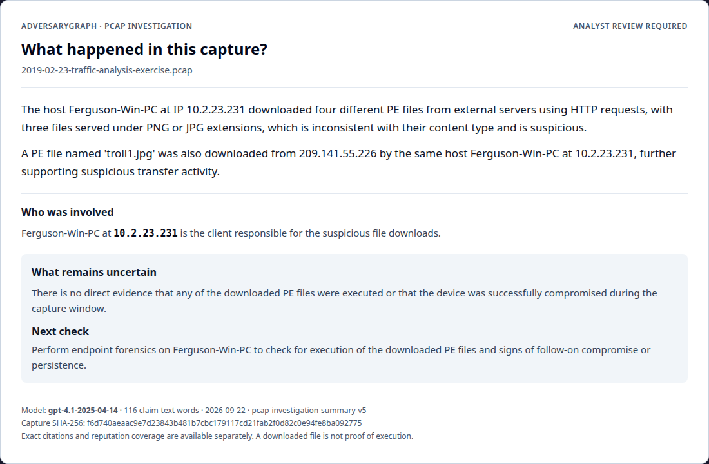
Native platform narrative (unchanged):
The host Ferguson-Win-PC at IP 10.2.23.231 downloaded four different PE files from external servers using HTTP requests, with three files served under PNG or JPG extensions, which is inconsistent with their content type and is suspicious.
A PE file named 'troll1.jpg' was also downloaded from 209.141.55.226 by the same host Ferguson-Win-PC at 10.2.23.231, further supporting suspicious transfer activity.
What happened — reference-assisted review: The published investigation identifies IcedID and Trickbot on Ruby Ferguson’s FERGUSON-WIN-PC (10.2.23.231). Six executable downloads include files masquerading as images. The native summary finds suspicious downloads but describes only four files, then ambiguously says troll1.jpg was “also” downloaded. It does not explain the multi-stage infection. Official answer.
Comparison: Correct host and image-extension executable activity. Misses the complete six-payload account, user and two malware families; wording risks double-counting troll1.jpg. The extraction comparison below is separate from narrative completeness.
Evidence boundary: The publisher reports unsuccessful ETERNALBLUE activity against the domain controller, not a confirmed second infected host.
Extraction check: 6/6 selected reference SHA-256 values occur in the original artifact records; 0/6 appear anywhere in the short report. This is exact-byte agreement, not proof of execution.
Short-list IOC review: No saved action-list indicators. This is not perfect precision and not a clean verdict.
Native short report · Structured claims and citations · Comparison · Screenshot validation · Packet and enrichment snapshot
15. TimberShade — 2019-01-28
Native result: partial. gpt-4.1-2025-04-14 · 87 claim-text words · 69.93 s generation · 10,295 tokens including internal repairs.
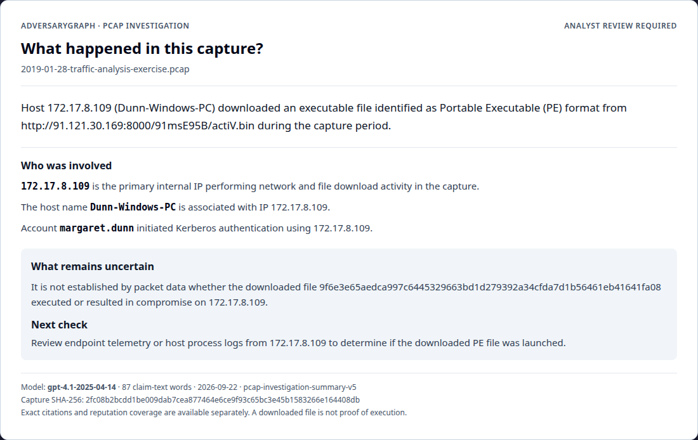
Native platform narrative (unchanged):
Host 172.17.8.109 (Dunn-Windows-PC) downloaded an executable file identified as Portable Executable (PE) format from http://91.121.30.169:8000/91msE95B/actiV.bin during the capture period.
What happened — reference-assisted review: Margaret Dunn’s DUNN-WINDOWS-PC (172.17.8.109) downloaded actiV.bin from 91.121.30[.]169:8000. The recovered executable hash matches the publisher’s sample; the reference’s associated IDS alerts support Dridex. The native report correctly explains the download and identity but leaves the malware family and subsequent incident unresolved. Official answer.
Comparison: Correct victim, user, executable URL and exact SHA-256. No Dridex identification or concise actionable payload indicator.
Evidence boundary: One paragraph in the PDF says 91.121.30.159, but another caption and the packets identify .169. The native .169 is not an error.
Extraction check: 1/1 selected reference SHA-256 values occur in the original artifact records; 1/1 appear anywhere in the short report. This is exact-byte agreement, not proof of execution.
Short-list IOC review: No saved action-list indicators. This is not perfect precision and not a clean verdict.
Native short report · Structured claims and citations · Comparison · Screenshot validation · Packet and enrichment snapshot
16. Eggnog Soup — 2018-12-18
Native result: partial. gpt-4.1-2025-04-14 · 127 claim-text words · 6.51 s generation · 8,449 tokens including internal repairs.
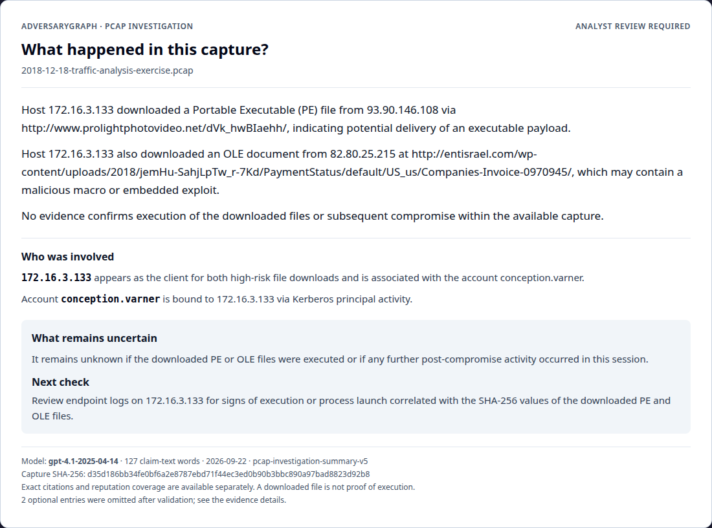
Native platform narrative (unchanged):
Host 172.16.3.133 downloaded a Portable Executable (PE) file from 93.90.146.108 via http://www.prolightphotovideo.net/dVk_hwBIaehh/, indicating potential delivery of an executable payload.
Host 172.16.3.133 also downloaded an OLE document from 82.80.25.215 at http://entisrael.com/wp-content/uploads/2018/jemHu-SahjLpTw_r-7Kd/PaymentStatus/default/US_us/Companies-Invoice-0970945/, which may contain a malicious macro or embedded exploit.
No evidence confirms execution of the downloaded files or subsequent compromise within the available capture.
What happened — reference-assisted review: Among several devices, the publisher identifies 172.16.3.133 as the workstation showing Emotet and IcedID activity. The native report selects the same host and connects it with executable and document downloads. It does not identify the malware chain; its wording about possible macros is a hypothesis, not extracted macro evidence. Official answer.
Comparison: Correct affected workstation and relevant transfer focus. No Emotet/IcedID interpretation; the source’s wider device inventory is outside this short incident-report objective.
Evidence boundary: This case reaches the raw fallback stream limit, so extracted evidence is not exhaustive. OLE format alone does not prove a malicious macro.
Short-list IOC review: No saved action-list indicators. This is not perfect precision and not a clean verdict.
Native short report · Structured claims and citations · Comparison · Screenshot validation · Packet and enrichment snapshot
17. Turkey and Defence — 2018-11-07
Native result: withheld. No saved native model result. Earlier validation failures remain in the audit; the final retry was blocked pending exact-transfer consent.
Native platform narrative (unchanged):
No validated native investigation summary is saved.
Report writing failed; this is not a clean-capture verdict.
What happened — reference-assisted review: The published case identifies Ursnif/Gozi delivery to Carlos Danger’s DANGER-WIN-PC (10.22.15.119). An executable served through shumbildac[.]com is 439,808 bytes and has an answer-listed SHA-256. Ordinary university browsing in the same capture is unrelated. The native platform has retained packet evidence but no validated short narrative. Official answer.
Comparison: Not counted as a native-summary success. Payload extraction is evaluated independently. No saved concise story or action list.
Evidence boundary: A withheld report means report writing failed, not that the capture is clean. The final provider retry was blocked pending exact-transfer consent.
Extraction check: 1/1 selected reference SHA-256 values occur in the original artifact records; 0/1 appear anywhere in the short report. This is exact-byte agreement, not proof of execution.
Short-list IOC review: No saved action-list indicators. This is not perfect precision and not a clean verdict.
Native short report · Structured claims and citations · Comparison · Screenshot validation · Packet and enrichment snapshot
18. Happy Halloween — 2018-10-31
Native result: withheld. No saved native model result. Earlier validation failures remain in the audit; the final retry was blocked pending exact-transfer consent.
Native platform narrative (unchanged):
No validated native investigation summary is saved.
Report writing failed; this is not a clean-capture verdict.
What happened — reference-assisted review: The reference identifies Trickbot on Ichabod Crane’s HEADLESS-PC (10.100.9.107). The relevant executable transfer is 46.173.214[.]185/startr.ack around 15:34 UTC, after ordinary startup traffic. Its recoverable hash is listed in the answer. The platform’s final report-writing state is withheld; this explanation is reference-assisted, not native output. Official answer.
Comparison: No saved native short summary; original evidence remains available. No saved incident explanation or short IOC list.
Evidence boundary: The beginning of the capture is not the beginning of malicious activity. Final retry awaits exact-transfer consent.
Extraction check: 1/1 selected reference SHA-256 values occur in the original artifact records; 0/1 appear anywhere in the short report. This is exact-byte agreement, not proof of execution.
Short-list IOC review: No saved action-list indicators. This is not perfect precision and not a clean verdict.
Native short report · Structured claims and citations · Comparison · Screenshot validation · Packet and enrichment snapshot
19. Blank Clipboard — 2018-09-27
Native result: missed. gpt-4.1-2025-04-14 · 123 claim-text words · 7.01 s generation · 5,356 tokens including internal repairs.
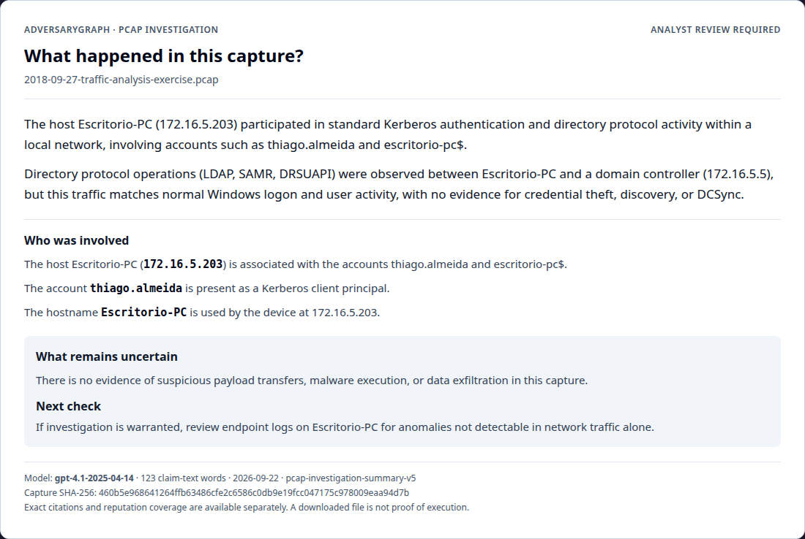
Native platform narrative (unchanged):
The host Escritorio-PC (172.16.5.203) participated in standard Kerberos authentication and directory protocol activity within a local network, involving accounts such as thiago.almeida and escritorio-pc$.
Directory protocol operations (LDAP, SAMR, DRSUAPI) were observed between Escritorio-PC and a domain controller (172.16.5.5), but this traffic matches normal Windows logon and user activity, with no evidence for credential theft, discovery, or DCSync.
What happened — reference-assisted review: The publisher links this infection to the first supplied email, a WhatsApp-themed lure. Its URL leads through lealcontabil[.]com and 54.38.137[.]127 to a Dropbox-hosted ZIP; another response contains encoded data rather than a normal ZIP. The native summary instead describes routine directory traffic and incorrectly implies no suspicious transfers occurred. Official answer.
Comparison: Workstation/account bindings are present in native packet evidence; the answer text does not explicitly enumerate their values. Misses the redirect/download chain and overstates a clean-looking interpretation. Selecting which email initiated it requires the supplied emails, which were not inputs to this run.
Evidence boundary: Dropbox and Google should not become blanket malicious-domain IOCs. The reference says there were no meaningful IDS alerts; lack of alerts did not remove the suspicious chain.
Short-list IOC review: No saved action-list indicators. This is not perfect precision and not a clean verdict.
Native short report · Structured claims and citations · Comparison · Screenshot validation · Packet and enrichment snapshot
20. Sputnik House — 2018-08-12
Native result: partial. gpt-4.1-2025-04-14 · 169 claim-text words · 15.15 s generation · 8,091 tokens including internal repairs.
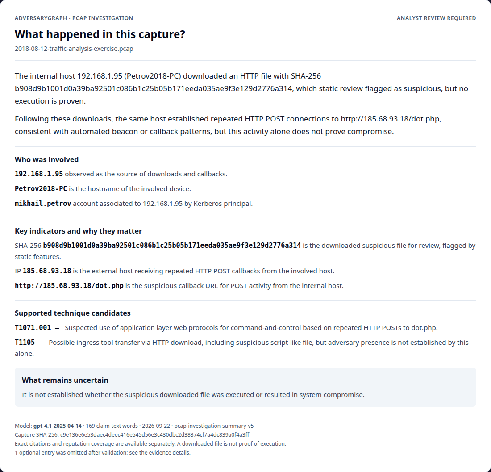
Native platform narrative (unchanged):
The internal host 192.168.1.95 (Petrov2018-PC) downloaded an HTTP file with SHA-256 b908d9b1001d0a39ba92501c086b1c25b05b171eeda035ae9f3e129d2776a314, which static review flagged as suspicious, but no execution is proven.
Following these downloads, the same host established repeated HTTP POST connections to http://185.68.93.18/dot.php, consistent with automated beacon or callback patterns, but this activity alone does not prove compromise.
What happened — reference-assisted review: Mikhail Petrov’s PETROV2018-PC (192.168.1.95) followed a download chain and repeatedly posted to 185.68.93[.]18/dot.php. The publisher links the chain to an IQY email attachment and notes a Marap-associated alert, while retaining family uncertainty. The native summary captures the host and callbacks but does not identify the initiating attachment or clearly explain the executable stage. Official answer.
Comparison: Correct workstation/user and recurring POST destination. Does not explain the IQY-to-download chain. Its selected suspicious file hash is not listed by the answer, so it is not counted as an answer-confirmed payload.
Evidence boundary: Email attachments were not model input. The page date is August 12, whereas the packet incident is August 11. Do not turn the publisher’s tentative family discussion into a categorical verdict.
Short-list IOC review: b908d9b1001d0a39ba92501c086b1c25b05b171eeda035ae9f3e129d2776a314 — not explicitly addressed by reference text; 185.68.93.18 — corroborated callback; hxxp://185.68.93.18/dot.php — corroborated callback.
Native short report · Structured claims and citations · Comparison · Screenshot validation · Packet and enrichment snapshot
What the answer comparison means
Against the complete published scenarios, the manual review finds 12 partial explanations, 4 missed or misinterpreted scenarios, and 4 withheld reports. None is counted as a complete reference-level investigation. This is not a pure model-accuracy score: several reference solutions use IDS alerts, email files or endpoint artifacts that were absent from the PCAP-only input.
| Case | Native incident story | Reference context |
|---|---|---|
| 2020-04-24 — Steelcoffee | partial | Qakbot / Qbot |
| 2020-03-14 — Mondogreek | partial | Trickbot |
| 2020-02-21 — One-Hot-Mess | partial | Dridex |
| 2020-01-30 — Sol-Lightnet | partial | Hancitor |
| 2019-12-25 — It happened on Christmas day | missed | No categorical family required |
| 2019-12-03 — Icemaiden | missed | Ursnif |
| 2019-11-12 — Okay-Boomer | partial | No categorical family required |
| 2019-08-20 — Badbundt | withheld | Ursnif / Gozi, then Trickbot |
| 2019-07-19 — So hot right now | partial | SocGholish / FakeUpdates delivering NetSupport Manager |
| 2019-06-22 — Phenomenoc | partial | Rig exploit kit delivering KPOT Stealer |
| 2019-05-02 — BeguileSoft | missed | Hawkeye keylogger |
| 2019-04-15 — StingrayAhoy | withheld | Ursnif, then AZORult |
| 2019-03-19 — LittleTigers | partial | Remcos RAT and Dridex |
| 2019-02-23 — StormTheory | partial | IcedID / Bokbot with Trickbot |
| 2019-01-28 — TimberShade | partial | Dridex |
| 2018-12-18 — Eggnog Soup | partial | Emotet and IcedID / Bokbot |
| 2018-11-07 — Turkey and Defence | withheld | Ursnif / Gozi |
| 2018-10-31 — Happy Halloween | withheld | Trickbot |
| 2018-09-27 — Blank Clipboard | missed | No categorical family required |
| 2018-08-12 — Sputnik House | partial | Marap-associated alert; author leaves precise family uncertain |
The expected workstation IP appears in 15/16 saved reports; 14 are explicit matches to reference text and one (Blank Clipboard) is supported by the packet identity record. Christmas day fails the victim-role check. Merely mentioning the right IP is not full identity or incident accuracy.
The selected extraction check finds 19/19 exact SHA-256 matches in original artifact records, across cases where the answer explicitly describes a recoverable PCAP payload. Only 8 of those hashes occur anywhere in the short report, and 3 are retained in its IOC list. This measures a narrow set of exact-byte matches, not total extraction recall or maliciousness. Phenomenoc's host-retrieved sample and encrypted transfers are excluded from that denominator.
The short action lists contain eleven entries: three answer-confirmed payload hashes, two answer-confirmed callback entries, one packet-verified IP with a reference typo, three entries not explicitly addressed by the answer text, and two server-target URLs assigned the wrong security role in the Christmas case. Empty lists are not scored as perfect precision.
Four reference inconsistencies were checked directly against packet addresses: Christmas (.199 versus .119), NetSupport (.214 versus .213), BeguileSoft (145.14.* versus 154.14.*), and TimberShade (.169 versus .159). The read-only discrepancy checks retain commands and results, including local TShark CLDAP warnings. The comparison does not silently treat a typo as ground truth.
An answer-key match is a useful check, not a substitute for evidence. Published exercises do not necessarily list every legitimate connection or every suspicious indicator. Therefore, an indicator absent from the answer is marked not addressed, not automatically called a false positive. Likewise, spotting an answer-listed address somewhere in a packet inventory is not the same as selecting it for investigation with a correct role and explanation.
The most important qualitative check is whether the report explains the incident. A report can identify the correct workstation and a real executable download yet miss the command-and-control traffic, credential theft or lateral movement that makes the exercise meaningful. A family label can be left unresolved honestly, but that does not make the investigation complete.
This distinction also explains why the experiment keeps native failures. Optional-claim filtering can make a report shorter and more defensible while removing an otherwise useful IOC that the model cited incorrectly. A technically valid report can still overgeneralise from a small selection. Both outcomes belong in the results.
Limitations and human comparison
This was not a controlled comparison with a human analyst. No analyst completed the same cases under a matched time limit, toolset and scoring protocol. There is consequently no measured human accuracy, speedup or labour-saving percentage to report.
A competent analyst could follow suspicious streams, inspect transferred file content, distinguish HTTP Host headers from packet destinations, investigate why a device changed names, and recognise that a benign-looking download might be only one stage of a longer intrusion. The analyst could also make mistakes or use threat intelligence unavailable to this run. These are differences in investigative workflow, not measured scores.
The automated strengths are repeatable decoding, exact hashes, consistent evidence records, bounded external lookups, and rapid generation of a reviewable starting point. Its limitations include incomplete protocol/attack interpretation, evidence-selection blind spots, provider availability, historical reputation drift, and language that sometimes sounds more certain than its supporting evidence.
The corpus is small, historical and deliberately educational. The system was improved during testing, and failed cases could receive an explicitly recorded operator-selected provider fallback. It is not a random sample, a contemporary threat benchmark, an autonomous no-intervention run, or a fair head-to-head model ranking. Generation times include validation repairs and provider pacing; total engineering elapsed time is not analyst investigation time. Unknown token usage is not silently estimated.
The next accuracy work belongs upstream of prose: preserve relationships between events, retain important attack stages in the evidence selection, distinguish attacker and victim roles, improve protocol-specific behavioral findings, and test current provider coverage separately from incident-time conclusions. A stronger system prompt helps, but it cannot supply telemetry that the analysis never exposed.
Conclusion
The reporting revision makes AdversaryGraph's output much easier to read and audit. The useful deliverable is a short narrative linked to its supporting evidence—not a renamed packet inventory. The screenshots show actual platform results, and the answer comparisons make the remaining gaps visible.
That is not the same as a near-100% investigation system. Software tests establish that the reporting workflow behaves as designed; they do not establish that every incident conclusion is correct. The defensible operating model remains automation prepares the evidence and draft; an analyst validates the story. This experiment preserves the distinction instead of hiding it behind a single accuracy number.
Related research
Original six-case AI-agent experiment · Earlier ten-case deterministic test · AdversaryGraph · Malware analysis · DFIR
References
- Malware-Traffic-Analysis.net training exercises — corpus source; each case links its specific exercise and answer page.
- Malware-Traffic-Analysis.net about and handling guidance.
- ThreatFox API documentation — current IOC-retention boundaries.
- VirusTotal API errors — rate limiting is not a negative malware result.
- OpenAI Structured Outputs — schema-constrained output is a structural control, not a factual-correctness guarantee.
- Anthropic Messages API — provider-returned message/model and usage metadata.
- Evaluation protocol, implementation verification, runtime provenance, usage accounting, and answer-comparison records.
Follow My Work
1200km.com · Medium · LinkedIn · GitHub · Email